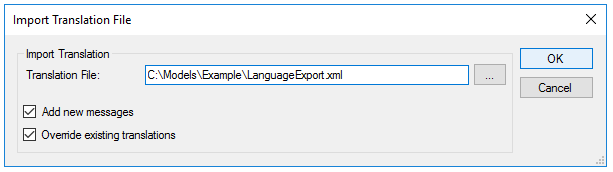

By selecting in the main GeneXus Menu: Tools > Translations > Import Translations File, the following dialog will be opened to allow you to import the previously exported Language object(s).  You can open this dialog from any Environment because translations are Environment-independent. OptionsTranslation File: This is the name and directory of the Translation file. Add new messages: Allows adding new messages to the Knowledge Base. If this option is not selected, only the translations of existing messages in the Knowledge Base will be imported. Overwrite existing translations: Imports translation file messages that have already been translated in your Knowledge Base. See AlsoApplication Localization
|
| Backlinks |
| Export Translations File |